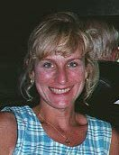

Nichole JoAnne Giannaras

Family * Education * Employment History
Hobbies * Personal Achievements * Future
Family
Nichole JoAnne DeAngelo was born in 1963 in Florida. She lived with her mom, , in Maryland. Nichole has three step-brothers and one step-sister. Nichole married Chris Vasilios Giannaras in 1989. They have two children, Nicholas Joseph and Alexander John.
Education
Nichole attened Largo High School and upon graduation attended Frostburg State University. After her parents footed a very large "partying" bill, she left, moved home, and attended Prince George's Community College where in 1985 she earned an Associates degree(finally!) in Hospitality Services Management.
Employment History
During her college summers she worked as a lifeguard for Wild World Theme Park(now Adventure World) and then at the Days Inn Hotel as a pool manager. One rainy day brought her inside where she first discovered that she may like working on the inside of a hotel, thus changing her academic major and career ambition. She worked for Days Inn, then Ramada and then the Willard Inter-Continental Hotel inWashington, DC where she progressed from front desk clerk to Groups Coordinator. Upon marrying Chris in 1989, they relocated and her career path again changed. For the next three years she worked in the capactiy of medical receptionist for various doctors. After the birth of her sons she returned to work part-time in the medical field including at the Aesthetic Institute of Maryland. Nichole currently works for Dr. Mehtap Aygun an OB/GYN.
Hobbies
Nichole likes to chat on IRC, shop, and go dancing and partying with her friends. She is NOT a Philadelphia Eagles fan but is learning to cope...it's been eight long years but she is hanging in there, but she has become a Ravens fan and enjoys going to all the home games even though she doesn't pay attention the game. (So he says!) She pays attention. She can tell you that the "kicker guy" is really cute, and that "hey--we have male cheerleaders!!..cool!!" Half time is time to visit Mom down in the Clubhouse, and you can't buy beer after the 3rd quarter. See--she pays attention.
Personal Achievements
Nichole finds motherhood one of her greatest achievements. She adores her sons and enjoys every aspect of watching them grow.
Future
When her sons are in school full time, Nichole hopes to return to her original career choice in some facet of the hospitality industry.